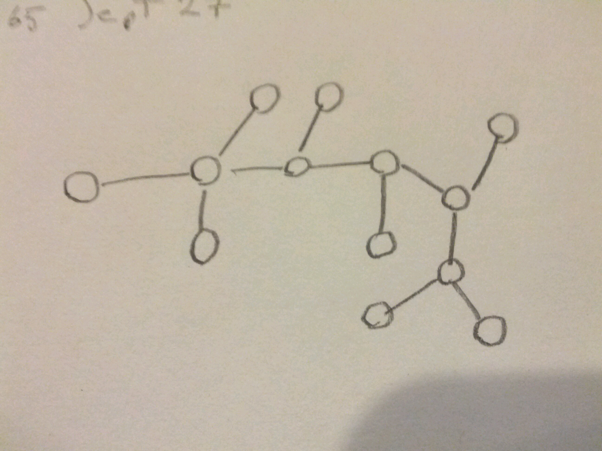
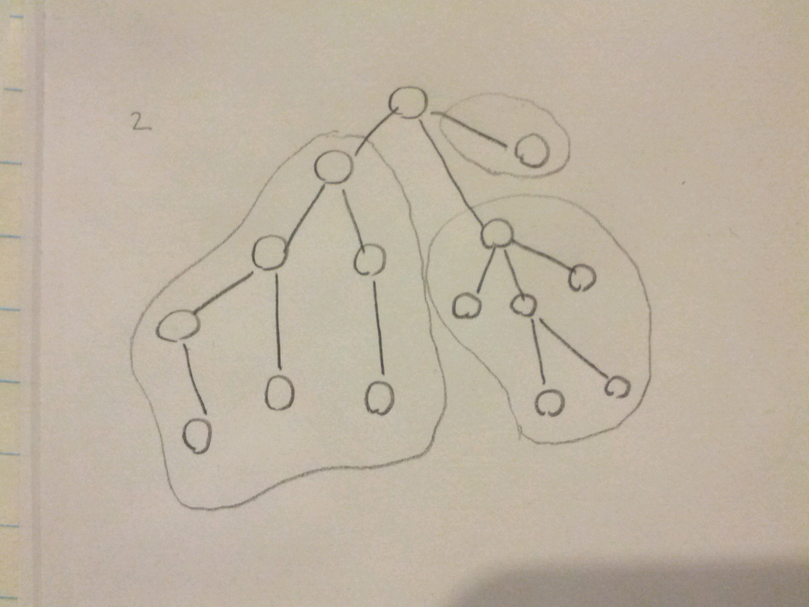

The day that I ever become hip... please shoot me.
Happy birthday to M.L.
Divide & Conquer¶
Given a problem of size \(n\),
- Divide it into 2 (or more) disjoint smaller problems.
- Solve each smaller problem independently.
- Combine the smaller solutions to solve the original problem.
Examples
- Binary Search
- Merge Sort
- Subset sum
Finding the longest path in a graph is (sort of) NP-complete.¶
What if we focus on trees? Is this special case better?
Note
A tree is a graph that has no cycles.
In trees, the shortest (resp. longest) path is the only path.
Algorithm
for each \(x\)
breadth-first-search from \(x\)
gives distance from \(x\) to all other vertices.
report the greatest distance (& path if needed)
Finding the longest path in a tree is \(\in\) P.¶
(B.F.I. \(\in O(n^2)\))
Break the tree into sub-trees by removing nodes.
Algorithm
Given tree \(T\),

- arbitrarily choose \(v\) in \(T\)
- split \(T\) into \(T_1,...,T_k\) where \(k\) is the degree of \(v\)
- for each subtree, \(T_i\), determine the longest path completely in \(T_i\) and longest path in \(T_i\) that has \(v\) ‘s neighbour at one end.
- longest path in \(T\) either includes \(v\), or it doesn’t.
- if not, then one of the subtrees contains the longest path
- if so, the longest path consists of the longest top_to_bottom path + second longest top_to_bottom_path
\[Time(n) = T(n_1)+...+T(n_k)\]\[...\]\[\in O(n)\]
where \(k\) is the degree of \(v\).